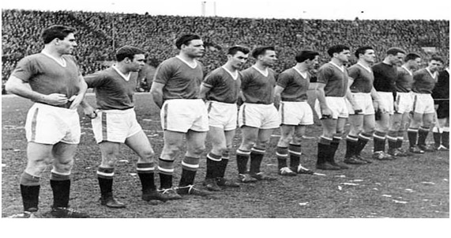
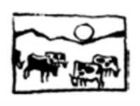

Chương 11

ần lượt đánh bại Shamrock Rovers (Ireland) và Dukla Prague (Tiệp Khắc), Manchester United giành quyền vào tứ kết Cúp C1 mùa 1957-1958, gặp Red Star Belgrade. Với 11 cầu thủ trong đội hình chính đều là tuyển thủ quốc gia Nam Tư, Red Star không phải đội bóng dễ nhằn. Trên sân Old Trafford, United chỉ thắng sít sao 2-1, kiếm được lợi thế mong manh trước trận lượt về tại Belgrade vào ngày 5 tháng 2, 1958.
Vòng trước gặp Dukla, United từng trải qua một phen ú tim. Sau trận đấu ở thủ đô Tiệp Khắc, CLB không thể trở về ngay, do chuyến bay bị hoãn. Thế là Busby phải mua vé cho toàn đội bay sang Hà Lan, từ Hà Lan đi thuyền sang Anh, rồi từ bến cảng đáp xe lửa về Manchester! Tuy về kịp để thi đấu quốc nội, cầu thủ người nào người nấy đều mệt mỏi rã rời. Lần này, để tránh mọi rắc rối có thể xảy ra, tổng thư ký Walter Crickmer quyết định thuê hẳn một chiếc máy bay riêng cho chuyến du đấu Nam Tư. Máy bay được thuê là của hãng British European Airways, số hiệu BEA 609, điều khiển bởi cơ trưởng James Thain và cơ phó Kenneth Rayment. Rayment không xa lạ gì với United; chính ông đã lái phi cơ chở họ sang TBN đá tứ kết với Bilbao một năm trước.
Ngày 1 tháng 2, giám đốc George Whittaker của United qua đời. Các thành viên BLĐ CLB đều ở lại Manchester đưa tang ông, chỉ riêng Walter Crickmer tháp tùng đội bóng đi Belgrade. Do có chỗ trống trên máy bay, Matt Busby mời Frank Swift, cựu thủ môn ĐTQG Anh và đồng đội cũ của ông ở Manchester City, đi cùng. Swift lúc ấy là phóng viên tờ Newsof the World. Ông bay với tư cách khách mời của Busby, chứ không phải báo chủ quản gửi đi.
Bận dẫn dắt đội tuyển xứ Wales đấu vòng loại World Cup với Israel, trợ lý Jimmy Murphy không có mặt trên chuyến bay[1]. Thật ra, Murphy đã tính xin lỗi LĐBĐ nước nhà để sang Nam Tư, song Busby ngăn cản. “Không phải lo lắng, Jimmy”, Busby nói, “nghĩa vụ của anh đối với xứ Wales quan trọng hơn”. Thay vào vị trí của Murphy là trợ huấn Bert Whalley.
Cùng vắng mặt còn có Wilf McGuinness và Ronnie Cope. McGuinness dính chấn thương đầu gối, buộc phải ở nhà, còn Cope đã sắp sẵn hành lý, chuẩn bị đón taxi ra sân bay thì bị Jimmy Murphy kéo lại: “Ronnie ơi, HLV trưởng vừa gọi. Ông ấy phải đem theo Geoff Bent để phòng hờ, vì Roger Byrne không khỏe, chưa biết ra sân được hay không. Do đó không còn chỗ cho cậu. Đừng buồn nhé, chỉ một trận này thôi.”
Nhưng Cope không chỉ buồn, mà còn giận dỗi đòi rời CLB. Anh không biết rằng người chiếm chỗ mình, Geoff Bent, cũng chẳng vui vẻ gì. Dường như có linh tính, Bent luôn tỏ ra hồi hộp, căng thẳng, cứ ước chi mình không phải đi. Mà Bent không phải người duy nhất có tâm trạng như trên. Majorie, bạn gái của Eddie Colman, cho biết trước ngày lên đường, Colman cũng thường xuyên lặp đi lặp lại “Anh không muốn đi. Không muốn chút nào”.
Dù muốn dù không, ai được chọn đều phải bay tới Belgrade. Bấy giờ đang thời chiến tranh lạnh, đối với người Anh, nước Đông Âu nào cũng bí hiểm. Nghe nói những xứ xã hội chủ nghĩa rất nghèo đói, các cầu thủ ai nấy đều đem theo hàng lố đồ ăn, nào là đồ hộp, súp, trái cây, sôcôla và bánh kẹo. Có người mang theo cả cái bếp ga mini. Đến nơi mới ngã ngửa, vì giới chức Nam Tư đón tiếp United như khách VIP, cho ở khách sạn hạng sang, thức ăn thừa mứa và ngon ngất ngây. Những đồ ăn mang theo hóa ra thừa thãi, các chàng United đem tặng lại hết cho nhân viên khách sạn.
Ngày diễn ra trận đấu, khán giả kéo đến sân không còn một chỗ trống. Hiệp một mới bắt đầu được 90 giây, Viollet đã mở tỷ số cho United. Charlton ghi thêm 2 bàn đẹp mắt, giúp đội khách dẫn 3-0 sau 45 phút. Khoảng cách quá an toàn khiến United trở nên tự mãn. Red Star vùng lên vào hiệp hai, quân bình tỷ số 3-3 một cách ngoạn mục. Tuy thế, tỷ số hòa vẫn đủ đưa đội khách vào bán kết.

Trước trận gặp Red Star: Đồng Ấu Busby ra quân lần cuối (Ảnh: Hat4uk.wordpress.com)
Hết trận, Red Star đãi đội khách bữa tiệc tối thịnh soạn tại khách sạn Majestic. Tiệc tan thì đã 11 giờ, đến giờ cầu thủ phải đi ngủ, song Busby cao hứng phá lệ, cho phép học trò ăn chơi xả láng. Được thầy thả lỏng, các cầu thủ tản đi mỗi nhóm một nơi. Viollet ngồi uống bia, tán gẫu với tiền bối Frank Swift. Taylor, Edwards và Byrne được nhà báo chủ nhà Miro Radojcic dắt đi bar. Những cầu thủ khác như Foulkes và Scanlon thì cùng hai viên phi công đi ăn tiệc tăng hai ở đại sứ quán Anh, trong khi Pegg, Charlton, Gregg… gầy sòng đánh bài. Đêm đó, Gregg được thần may mắn phò trợ, đánh ván nào cũng ăn. Thừa cơ mọi người vắng nhà, anh chàng Eddie Colman đi dọc hành lang khách sạn, thấy đồng đội nào để giày ngoài cửa thì đánh tráo. Có bao nhiêu giày, chàng ta tráo tất, chỉ chừa một đôi của sư phụ Busby!
Trời gần sáng, các cầu thủ United mới lên giường, ngủ vạ vật được một lúc rồi trở dậy lên đường ra sân bay. Danh sách hành khách bay về Anh, ngoài thành viên CLB và phi hành đoàn, còn có 11 nhà báo,cùng một số người “đi ké”, trong đó có bà Vera Lukic và con gái nhỏ Vesna, vợ con của một tùy viên quân sự thuộc tòa đại sứ Nam Tư ở London. Tại phi trường, cả đội gặp lại nhà báo Miro Radojcic. Radojcic đề nghị được đi cùng, để sang Anh viết phóng sự về United. Matt Busby đồng ý ngay. May cho Radojcic, vào đến hải quan, ông mới phát hiện mình không đem theo hộ chiếu, phải quay về nhà lấy; đến khi trở lại thì máy bay đã cất cánh.
Cũng may mắn là nhà báo Frank Taylor của tờ News Chronicle. Vừa lên máy bay, ông thấy các đồng nghiệp đang túm tụm ngồi đằng đuôi. “Ê bố già”, Frank Swift gọi, “Tao dành chỗ cho mày nè. Ngồi đuôi là an toàn nhất đó. Hồi chiến tranh, máy bay bị bắn rơi thì chỉ có thằng ngồi đuôi sống được thôi”. Không hiểu sao, Taylor lại lắc đầu, chọn ngồi trên hàng đầu. Rảnh rỗi không biết làm gì, các cầu thủ lại gầy sòng ở khúc cuối và giữa máy bay, riêng Harry Gregg vì hôm qua đã ăn bộn, sợ thua lại nên không dám chơi, ngồi một mình ở trên.
Đến Munich, Đức, máy bay hạ cánh để tiếp nhiên liệu. Giữa trời tuyết nặng hạt, khí lạnh cắt da, mọi người riu ríu kéo nhau vào phòng chờ, gọi rượu và cà phê uống cho ấm. Kiểm tra tình trạng phi cơ, Thain và Rayment nhận thấy có tuyết đóng trên hai cánh. Tuy vậy, Thain cho rằng tuyết không nhiều lắm, không ảnh hưởng gì[2]. Khoảng 2 giờ 30 phút chiều, khi tiếp liệu xong, phi cơ chạy đà chuẩn bị bay. Lúc tăng tốc, các phi công nhận thấy âm thanh lạ nơi động cơ, nên quyết định ngừng cất cánh. Hai lần liên tiếp chạy đà rồi lại hủy, hành khách phát chán, lục tục rời máy bay về phòng chờ.
Tại phòng chờ, không khí trở nên trầm lắng. Các cầu thủ bắt đầu cảm thấy bất an. Tuyết rơi ngày càng nhiều. Duncan Edwards đánh điện về nhà, thông báo: “Tất cả các chuyến bay đều bị hủy. Mai mới về được”. Mọi người đều nghĩ như Edwards, rằng không thể bay trong điều kiện thời tiết hiện tại, nên ai cũng ngạc nhiên khi nghe thông báo mời trở lại máy bay. Bill Foulkes vừa mua cốc cà phê, chưa kịp uống đã phải bỏ dở. Tự dưng anh cảm thấy một luồng khí lạnh chạy dọc sống lưng!
Trở lại trên khoang, sòng bài tiếp tục hoạt động sôi nổi. “Gregg”, ai đó gọi, “Xuống đây ngồi chơi, cho bọn tao gỡ coi nào”. “Cứ từ từ, máy bay cất cánh, tao sẽ xuống”, Gregg đáp. Một số cầu thủ quyết định đổi chỗ. Bobby Charlton và Dennis Viollet lên ngồi phía trên, còn David Pegg và Eddie Colman lại đi xuống dưới, ngồi cạnh Tommy Taylor. “Đúng đúng, xuống đây các chú”, Frank Swift nói, “Ngồi đuôi an toàn nhất.”
2 giờ 56, Rayment gọi cho đài không lưu, xin phép cất cánh. 3 giờ 3 phút, máy bay bắt đầu tăng tốc. Lúc này, mặt Roger Byrne trở nên trắng bệch, Johnny Berry ngồi bên cạnh cũng co rúm lại vì sợ. Billy Whelan ghé tai Albert Scanlon thì thào: “Albert, chuyến này chắc chết, nhưng tôi đã sẵn sàng rồi!”
Khi đồng hồ tốc độ chỉ 217km/h[3], Thain hô “V1”, nghĩa là Velocity 1, đạt đến vận tốc này thì không hủy bay được nữa. Ông đợi đồng hồ chỉ lên 220 thì sẽ hô “V2”, làm hiệu cho Rayment cất cánh. Chẳng ngờ tốc độ không tăng, mà dừng tại chỗ, trước khi tụt xuống 207, rồi 194. “Chúa ơi, hỏng mất rồi”, Rayment than. Hai viên phi công đều hiểu rõ: Nếu không cất cánh, phi cơ cũng không thể thắng kịp.
Trong khoang hành khách, mọi người đều nhốn nháo khi thấy máy bay chạy quá lâu vẫn chưa bay lên. Ai đó bật cười khô khốc. “Đứa nào cười đó?”, Johnny Berry la hoảng, “Không biết mình sắp chết hay sao?” Nỗi sợ lên đến đỉnh điểm khi chiếc BEA 869 chạy hết đường băng, tiến ra bãi cỏ, rồi tông đổ hàng rào.
Xuyên qua hàng rào, máy bay tiếp tục đâm vào một căn nhà dân, gãy lìa cánh bên trái. Phần còn lại theo đà chạy tiếp, ủi trúng một gara chứa xe tải đầy xăng, gây nổ lớn. Sức nổ khiến máy bay gãy làm hai, phần đuôi bắn lên không, rơi vô kho chứa cỏ. Chiếc cánh bên phải quay mòng mòng trên mặt đất, cắt đứt những hàng cây như một lưỡi liềm khổng lồ. Hành khách trên phi cơ một số bị kẹt bên trong, số khác bắn ra ngoài, nằm bất động trên thảm tuyết.
Thủ thành Harry Gregg bỗng cảm thấy đất trời đảo lộn, rồi mọi thứ đều tối đen, và im lặng bao trùm, không một tiếng la, không một tiếng khóc. “Mình chết rồi, mình đang ở địa ngục chăng?”, anh tự hỏi. Đưa tay sờ lên mặt, Gregg cảm thấy máu nóng đang chảy từng giọt. Nhìn về trước, anh thấy một đốm sáng nho nhỏ. Thu hết sức, Gregg bò về phía đốm sáng, chui qua lỗ hổng, ra khỏi máy bay.
Vừa ra ngoài, Gregg nhận thấy trợ huấn Bert Whalley đang nằm trên tuyết, mắt mở trừng trừng, đã chết tự bao giờ. Bốn bề chung quanh là những mảnh vỡ từ phi cơ, là lửa, và những xác người. Trong một thoáng, Gregg tưởng chỉ mình mình còn sống, cho đến khi cơ trưởng James Thain chạy đến, hét vào mặt anh: “Chạy đi, thằng ngu! Máy bay nổ bây giờ!”
Lúc va chạm xảy ra, Thain chỉ xây xát nhẹ. Ông nhanh chóng tháo dây an toàn, nhảy khỏi buồng lái. Rayment thì bị thương nặng, rơi vào hôn mê. Thain tạm để Rayment nằm đó, vì nghĩa vụ cơ trưởng phải lo cho hành khách trước tiên. Hễ gặp ai, Thain đều ra hiệu phải chạy ngay, tránh việc máy bay có thể phát nổ. Riêng ông bất chấp nguy hiểm, ở lại dùng bình xịt cố gắng chữa lửa. Nhìn qua một lỗ hổng, Thain thấy Bill Foulkes vẫn ngồi bên trong, mắt mở thao láo. “Làm gì trong đó? Đi ra, mau lên”, ông kêu.Như chợt tỉnh, Foulkes tháo dây, cắm đầu chạy trong cơn hoảng loạn, không biết mình đang chạy đi đâu.
Gregg cũng định chạy, song chợt nghe tiếng trẻ con khóc. Anh nhớ lại trong số hành khách, có người phụ nữ ẵm con nhỏ, chỉ nhỏ bằng con gái Lynda của mình. “Bà con ơi”, Gregg gào, “Còn người bị kẹt này. Giúp họ với chứ”. Rồi không đợi ai, anh chui lại vào máy bay, bất chấp nguy cơ cháy nổ.Bên trong tối om, Gregg ra sức mò mẫm. Anh tìm được cái nôi, nhưng trống không. Gần đấy có vật gì trông như một hình hài nhỏ bé, anh vồ lấy, nhưng chỉ là cái áo. Tiếng khóc lại vang lên, Gregg để ý nghe kỹ, tiến về đúng hướng đấy, lần này phát hiện ra em bé 20 tháng tuổi Vesna Lukic. Anh bế đứa trẻ lên tay, bò gần ra ngoài, thì lại nghe giọng phụ nữ kêu cứu ở đằng sau. “Chắc là bà mẹ”, Gregg nghĩ. Anh chạy thật nhanh ra, trao Vesna cho một cô tiếp viên, đoạn lại quay vào, bới trong đống đổ nát, cứu được bà Vera. Tuy bị gãy hai chân, Vera vẫn còn tỉnh táo. Khi biết con mình cũng đã an toàn, bà bật khóc nức nở[4].
Lúc này, Foulkes đã hoàn hồn. Anh quay lại hiện trường, cùng Gregg và vài nhà báo còn khỏe sơ cứu cho những người bị thương nặng, trong lúc chờ nhân viên y tế. Quanh đấy, Viollet, Charlton, Blanchflower và Byrne nằm trên tuyết. Họ bị bắn khỏi máy bay cùng ghế ngồi, dây an toàn hãy còn cài chặt. Charlton bất tỉnh, dường như bị nội thương; Viollet máu me đầy mặt. Blanchflower cũng đầm đìa những máu, tay treo lủng lẳng, song hãy còn tỉnh táo, quay qua nói chuyện với Byrne, không biết người đội trưởng đã trút hơi thở cuối cùng.
Xa xa, Matt Busby đang trong trạng thái nửa tỉnh nửa mê. Ông chống tay cố gắng ngồi dậy mà không nổi. Foulkes vội chạy tới đỡ, hỏi thầy có sao không. “Ngực ta, chân ta”, Busby thều thào yếu ớt. Sợ thầy lạnh, Foulkes lót áo trên tuyết rồi đặt ông nằm xuống. Busby không ngừng rên, Foulkes chẳng biết làm sao, đành chỉ ngồi nắm tay, truyền hơi ấm cho ông.
Charlton chợt tỉnh. Anh gỡ dây, tiến lại chỗ Busby và Foulkes. Nhìn HLV trong cơn đau đớn, chàng trẻ không khỏi nghẹn ngào: Thầy vừa phải phẫu thuật, còn rất yếu, vậy mà vẫn cố gắng bay sang Nam Tư. Chúng mình thanh niên còn khỏe, không sao, còn thầy, liệu qua khỏi được hay không? Trời ơi, có lẽ nào…
-Cậu có sao không? Foulkes hỏi
Charlton không nghe, im lặng nhìn vào khoảng không. Đoạn học theo Foulkes, anh cởi áo, lót dưới lưng Busby. Nhìn thấy Viollet cũng đã tỉnh, bước lại gần bên, Charlton ôm choàng đồng đội, hỏi một câu ngô nghê: “Máy bay rớt hả anh?”
Vài phút sau, xe cấp cứu đến nơi, chở các nạn nhân đến bệnh viện. Đã là cấp cứu, đương nhiên phải chạy nhanh, nhưng trong cơn bấn loạn, Foulkes không hiểu điều đó. Anh liên tục hét tài xế không được vội vàng kẻo nguy hiểm, phải chậm lại. Khi tài xế không nghe, Foulkes nhào lên, bóp cổ anh ta, khiến xe loạng choạng trên đường. Những người ngồi cạnh phải kéo ngay Foulkes lại, nếu không tai nạn thứ hai đã xảy ra.
Nạn nhân lần lượt được đưa tới nhà thương Rechts der Isar. Những thành viên United đã chết gồm bảy cầu thủ: Roger Byrne, Geoff Bent, Eddie Colman, Mark Jones, David Pegg, Tommy Taylor, Billy Whelan, cùng tổng thư ký Walter Crickmer và hai trợ huấn Bert Whalley, Tom Curry. Cùng thiệt mạng có 8 ký giả, 1 tiếp viên và 2 hành khách khác. Đa số những người qua đời đều ngồi ở đuôi máy bay.
Trong những người sống sót, Matt Busby bị chấn thương phổi, gãy xương sườn và gãy chân; Duncan Edwards toạc đùi và lủng thận; Johnny Berry chấn thương sọ não, chìm trong hôn mê sâu; Blanchflower gãy tay, gãy xương sườn, vỡ xương chậu; Frank Taylor và KennethRayment đều bị đa chấn thương[5]. Viollet, Charlton, Scanlon, Morgans và Wood may mắn chỉ thương tổn nhẹ. Gregg và Foulkes khỏe nhất, được đưa về khách sạn cùng cơ trưởng James Thain.
Đêm ấy, Gregg và Foulkes bám nhau như đôi sam. Người này đi đâu, người kia đi đó. Đến cả đi toilet cũng đi chung. Họ như trong trạng thái mộng du.

Hiện trường thảm họa Munich (Ảnh: The Guardian.com)
Chú thích:
[1] Trong khoảng 1956-1964, Jimmy Murphy vừa làm việc tại Old Trafford vừa giữ chức HLV trưởng xứ Wales. Dưới sự dẫn dắt của Murphy, Wales dự World Cup duy nhất trong lịch sử năm 1958. Đội thi đấu rất thành công, vào đến tứ kết, chỉ thua sít sao Brazil 0-1.
[2] Sau tai nạn, Anh và Đức tiến hành hai cuộc điều tra độc lập. Kết quả điều tra của Anh cho rằng tai nạn xảy ra do nguyên nhân khách quan, cơ trưởng James Thain không có lỗi. Phía Đức thì quy trách nhiệm cho Thain đã không chịu dọn tuyết trên cánh phi cơ.
[3] Nguyên đơn vị là knot, chúng tôi quy ra km/h cho dễ hiểu.
[4] “Nếu không nhờ Harry Gregg, gia đình tôi đâu còn như ngày nay”, bà Vesna Lukic hồi tưởng nhiều năm về sau, “Anh ấy là người hùng của chúng tôi”. Gregg thì rất khiêm tốn: “Có phải người hùng gì đâu. Đời mà, giúp được ai thì giúp thôi. Nếu cho thời gian suy nghĩ, có khi chẳng dám làm đâu, nhưng lúc đấy ai mà kịp nghĩ suy gì nữa.”
[5] Rayment qua đời ba tuần sau đó.